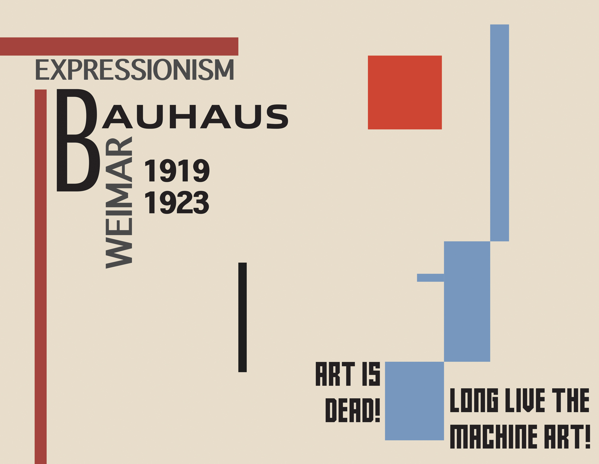
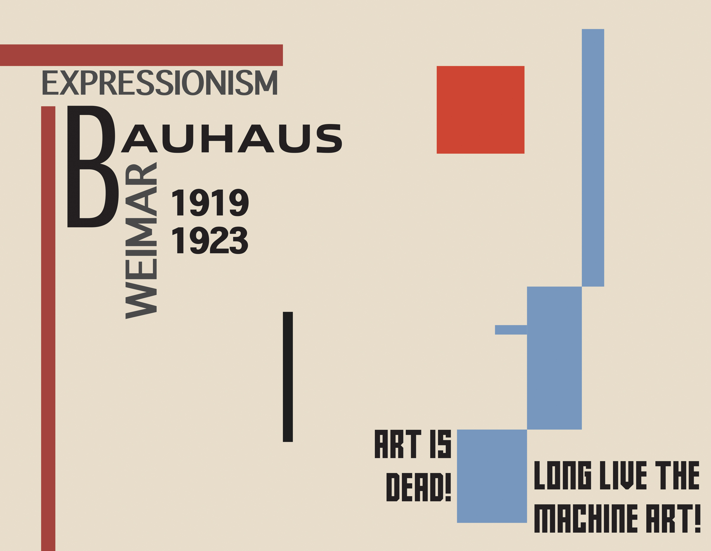

Neue Typographie Zine
This is a zine that I made for a class final. The objective of this project was to create something that goes through the history of graphic design. I decided to juxtapose well-known works from each time period together with descriptive words to give the look and feel of each period.

 
